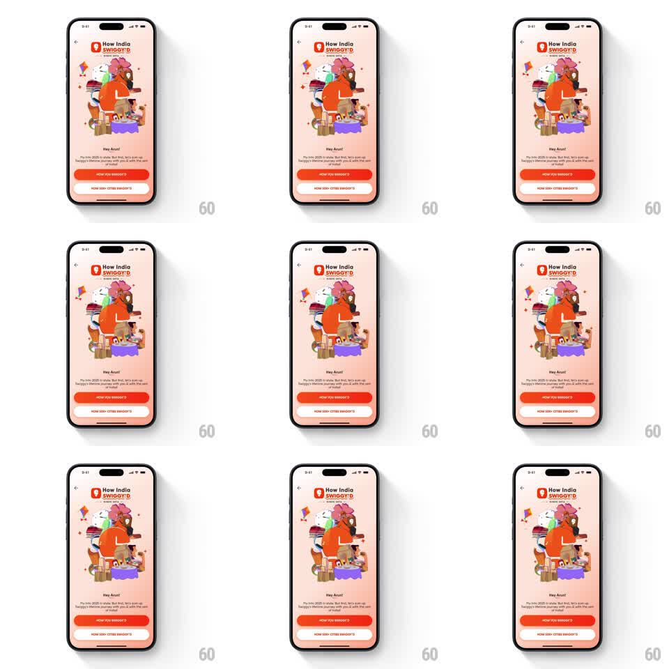

Media
Frame-by-frame

Rebuild this animation 1:1: Swiggy's "How India Swiggy'd" intro - a dense collage of food and delivery illustrations floats in layered loops over the greeting, buttons waiting below.

Rebuild this animation 1:1: Swiggy's "How India Swiggy'd" intro - a dense collage of food and delivery illustrations floats in layered loops over the greeting, buttons waiting below.
## Integration
Integration: stack-agnostic spec - springs given as stiffness/damping, timed motions as duration + curve; map every value to your framework and animation library of choice.
## Scene
A warm peach year-in-review intro: the "How India SWIGGY'D" logo at top, a tall central collage of hand-drawn illustrations (a delivery rider, buildings, food, a kite, characters) stacked like a parade, then "Hey Anand!" with a personal greeting and two buttons ("HOW YOU SWIGGY'D", "HOW DID+ CITIES SWIGGY'D").
## Motion spec
Pattern: layered floating collage, continuous idle loop.
- The collage elements fade and rise in as a group (600ms, 80ms stagger from bottom to top).
- Each layer then floats on its own loop: the rider bobs (3s), the kite sways side to side (4s, 6 degrees), small characters bounce subtly (2.5s), buildings hold nearly still.
- Float offsets are small (4-10px) and out of phase, so the collage feels alive without churning.
- The greeting text and buttons fade up after the collage settles (300ms) and stay still.
## Calibration
- Loops are seamless and desynchronized - no visible global cycle.
- The illustration stack keeps its overlaps; layers float in place, never re-sorting.
## Reduced motion
Static collage.
## Don't miss
- The kite is the most mobile element - its sway is the widest motion in the scene.
- The palette stays warm (peach, orange, red) with the illustrations providing the only cool accents.